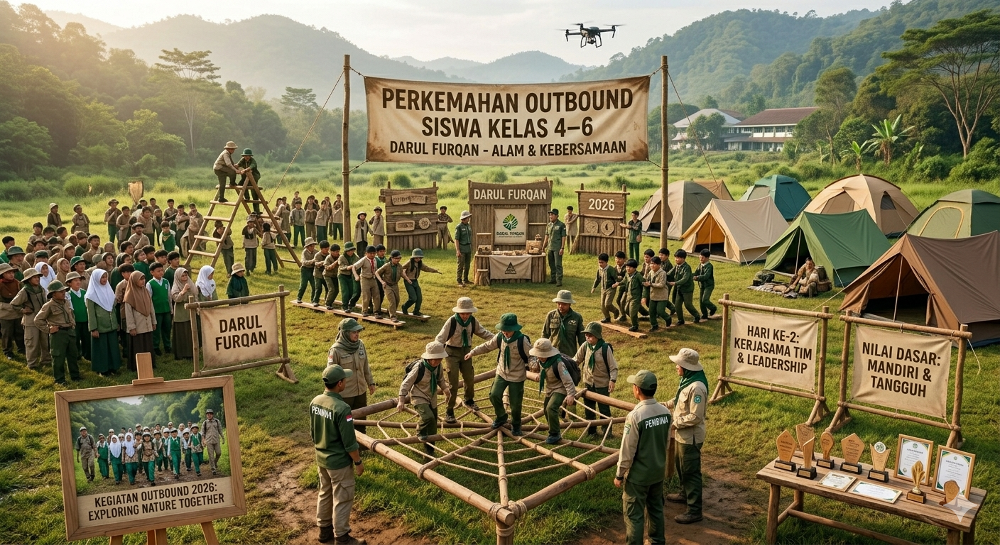
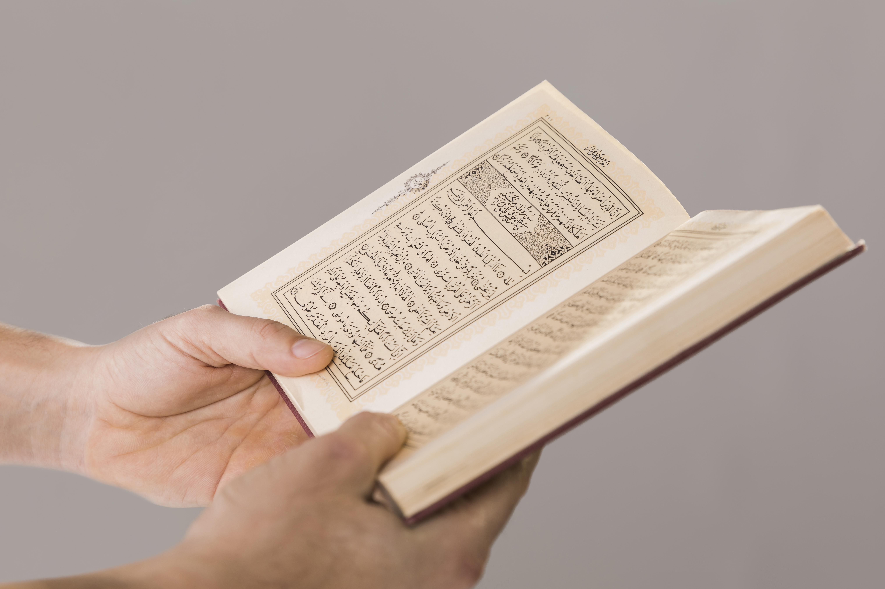

Pengumuman
Pengumuman1 Mei 2025
PPDB Tahun Ajaran 2025/2026 Resmi Dibuka
Yayasan Darul Furqan Pariaman dengan bangga mengumumkan pembukaan Penerimaan Peserta Didik Baru (PPDB) untuk tahun ajaran 2025/2026 mulai 1 Mei 2025.
Baca Selengkapnya →Informasi terkini seputar kegiatan, prestasi, dan pengumuman dari Yayasan Darul Furqan Pariaman.
PengumumanYayasan Darul Furqan Pariaman dengan bangga mengumumkan pembukaan Penerimaan Peserta Didik Baru (PPDB) untuk tahun ajaran 2025/2026 mulai 1 Mei 2025.
Baca Selengkapnya → Berita
BeritaKebanggaan keluarga besar SDIT Alam! Murid kami meraih Juara 1 dalam Olimpiade Matematika Tingkat Kota Pariaman 2025.
Baca Selengkapnya →
KegiatanKegiatan perkemahan dan outbound di alam terbuka untuk membangun karakter, keberanian, dan kerja sama tim siswa.
Baca Selengkapnya →
KegiatanSebanyak 15 siswa berhasil menyelesaikan hafalan 1 Juz Al-Quran dan diwisuda dalam seremoni yang khidmat.
Baca Selengkapnya → Kegiatan
KegiatanPameran hasil karya seni dan prakarya siswa digelar sebagai bentuk apresiasi kreativitas dan bakat anak.
Baca Selengkapnya → Artikel
ArtikelMetode pembelajaran berbasis alam terbukti meningkatkan kreativitas, kemampuan berpikir kritis, dan kecintaan terhadap lingkungan.
Baca Selengkapnya →